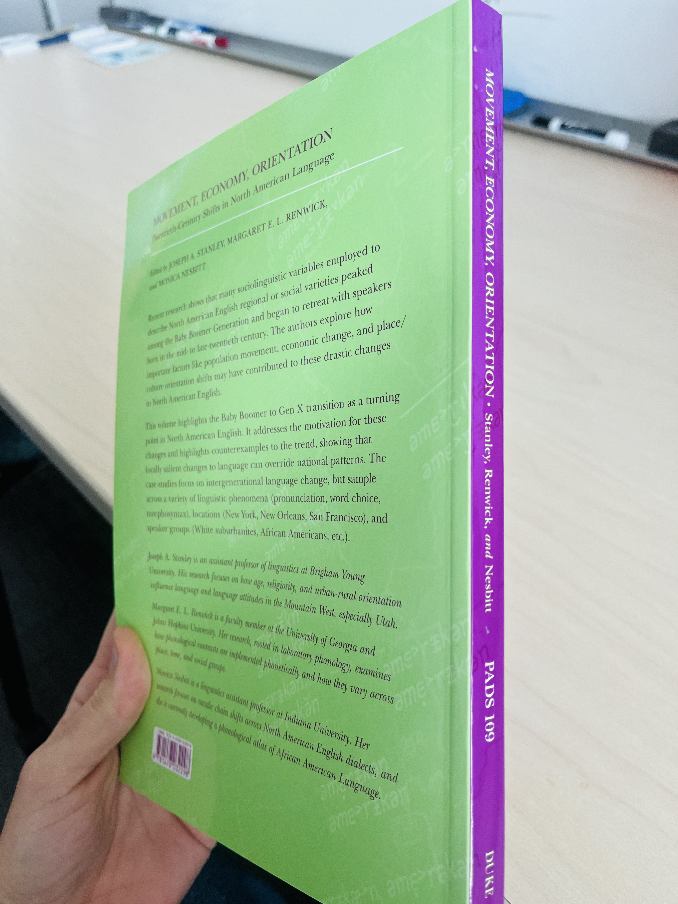
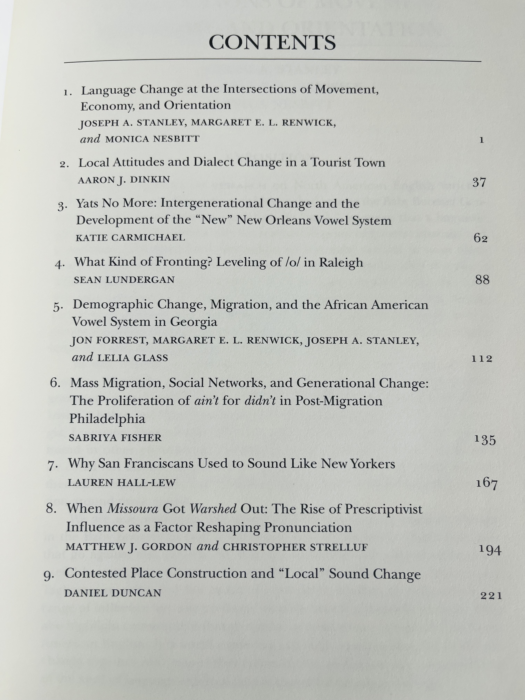

I am thrilled to announce the publication of the 109th volume of the Publications of the American Dialect Society (PADS) series. This one is called “Movement, Economy, Orientation: Twentieth-Century Shifts in North American Language” and was edited by me, Peggy Renwick, and Monica Nesbitt. In it, you’ll find our introduction and then eight fantastic chapters by phenomenal contributors. I am so fortunate to have worked with such amazing collaborators.
You can find the volume online here!


The premise of the volume came from something I read Monica write in her 2021 paper in American Speech. She wrote
“[T]he Baby Boomer–Gen X transition appears to be a pivotal transition throughout the country… [and] appears to be of great importance to North American English dialects in general.”
Perhaps one reason why this stood out to me (other than the fact that the Monica’s entire paper is just brilliant writing and I’m lucky have collaborated with her) is it very well describes what me and colleagues were finding in the South. Around this time, Peggy Renwick, Jon Forrest, and I were looking at our data from seven generations of Georgians, and—I believe it was Peggy who spotted it first—we noticed that the generation with the most canonical Southern Vowel Shift was the Baby Boomers. Monica continues:
“As future studies look to the Baby Boomer–Gen X transition as a pivotal moment of linguistic change, we must also consider other important social changes of the period, such as the increase in (geographic and economic) mobility, the rise of television and mediated speech, and so on. It is my contention that all of these aspects of lifestyle changes have contributed to the drastic changes to the North American regional map that appear to be unfolding.”
What this volume does then is it provides a coherent explanation for these simultaneous language changes being found in a lot of discontinuous places. In our introduction, we discuss population shifts and economic changes through out the 20th Century with a focus on that Boomer–Gen X transition around the 1950s and 1960s. We also discuss how people’s orientations towards or away from places gets mixed into all of this. We briefly summarize generational theory and highlight many sociolinguistics studies that have found that language variation can be in part predicted by generational cohort. The eight chapters that make up the bulk of the book each contain case studies that show evidence for these changes across different speech communities and linguistic phenomena. Some provide evidence for the Boomer–Gen X transition. Others provide evidence that more local changes were stronger influences on language. Overall, the volume is a cohesive set of studies that illustrate the kinds of linguistic changes that have happened in the mid-to-late 20th Century in North American English and the kinds of social forces that likely influenced those changes. Here’s a list of the chapters in the volume ▼

I think it’s really useful to have a volume specifically dedicated to an observation that’s being made in lots of independent speech communities. Since we are not sociologists, demographers, economists, or historians, each linguist who writes about these mid-century changes can only speculate about what kinds of social forces were at play. But having it all combined into one volume I think makes it easier to connect the dots and make connections between what would otherwise have been isolated studies. I hope the volume is useful for you. Each chapter provides a rich case study of changes in a particular speech community and can stand on its own as an in-depth documentation of language changes in the 20th Century. But when combined, particularly with the overview that the editors have written in the introduction, I think you’ll get a greater sense of the larger pattern being described.
Notes about the Introduction
Writing the Introduction was one of the academically challenging things I’ve been involved in. Part of the reason was because it’s the first time I’ve written something that wasn’t a “study” in the sense of providing novel results from some dataset, but rather an overview and synthesis of a larger topic. This involved looking outside of linguistics to find evidence for the arguments that we make. Another reason why it was so difficult for me personally is because it was entirely written while I was on parental leave. My time, access to a university library, and mental capacity to put towards this were all extremely limited. I’m so grateful for my co-authors generally, but also for their willingness to step up and cover for me while I was busy being unavailable and unhelpful. There’s no way the introduction or volume could have turned as as well as it did without them.
We knew that we had to cite a tremendous amount of research to make the case that the ideas we’re talking about are found over and over. In my own style of writing, I tend to be pretty citation-heavy anyway, but it looks like the references section for just the introduction ended up being nine pages long! But, while summarizing linguistics research is one thing, summarizing other research is so much tricker. Some parts of the introduction were divvied up, and one of my tasks was to write about how the economy shifted in the 20th Century and how that might have affected language. I’m not an economist or historian so this was new territory for me. (I had to relearn things I was taught in middle and high school social studies classes!) I thought that there’d be plentiful books on the history of 20th Century economics in the United States, but I had a hard time finding any. I had to explore a part of the library I didn’t know existed, and while I couldn’t find a summary with just the right amount of detail that I needed and could understand, I was also overwhelmed with the amount of related material. So summarizing a topic I knew little about and tying it into linguistics was tricky and I hope I did it justice.
I also wrote most of the section on generational theory. I’ll be the first to admit—and I do so in the chapter—that generational theory verges on the territory of pseudoscience, especially if you look at the strong positions held by Strauss & Howe (1991). However, recent researchers like Jean Twenge provide compelling data-driven evidence for the idea that generational cohorts are not a completely bogus idea. In the end, that section about generational theory—while much shorter than what I originally wrote—may be helpful for linguists who divide their participants into generational cohorts to track stepwise language change. Of course it’s best to model age as a non-linear continuous variable, if you have enough data to do (see Fruehwald 2021). But for most people, the next best thing is to group participants into discrete generational cohorts—either societal ones like Boomers, Gen Xers, Millennials, and Gen Zers, or more locally defined ones—and modeling those as an ordinal variable.
Another section I wrote was towards the end about Standard Language Ideology. Katie Carmichael tipped me off about Bonfiglio (2002) during a Q&A session at ADS in 2023. While the writing style is a bit different than what I’m used to, it is a fascinating read and has completely changed my views of what Standard American English really is. I don’t really offer any new insight beyond what Bonfiglio discusses, but I think its important to bring up the racist and xenophobic backstory of what Standard American English is a little more.
Finally, I forgot that the book immortalizes a cute thing my toddler does. I mentioned offhand that he says some words in an Australian accent because of the show Bluey. I thought it got cut, so I was delighted to see that little nugget make its way to the final edition.
Behind-the-scenes look at the volume’s development
I think it’s fun to read about the background of papers and projects, so I thought I share some insight into how this book came to be.
On January 3rd, 2022, I was in a meeting over Zoom with my Georgia English research team (Peggy Renwick, Jon Forrest, and Lelia Glass), presumably preparing for our ADS presentation a week later. Among the Georgians we studied, we noticed a major change in the speech of Baby Boomers compared to Gen Xers. We’ve noticed this in multiple speech communities now and Jon mentioned offhand that such a topic would make for a great PADS volume.
A week later at the ADS, I noticed this mentioned in multiple presentations. Aaron Dinkin said something like, “‘and then the pattern goes away after the boomers’ is a common observation”. So, I started to discuss the observation more broadly with a few people during and after the conference. I reached out to editors of others PADS volumes people about the feasibility of editing a volume pre-tenure, and it didn’t sound too bad. Valerie Fridland, for example, said it’s not a tremendous amount of work, but there are bursts of intense activity (soliciting contributors, reviewing) and then long periods of nothing. I also wrote to Natalie Schilling, the series editor, to soft-pitch the idea of this being a PADS volume. After lots of emails back and forth and the encouragement of many people, I decided I’d spearhead the project by around January 9th, 2022.
By mid-February 2022, Peggy and Monica were on board to be co-editors of the volume. Peggy is a longtime collaborator of mine and Monica’s 2021 paper is what spurred the idea in the first place. (After my pitch to Monica, her first question was, “How many volumes did you have in mind?” We could have included many more chapters but we just couldn’t!) We then put together a list of potential contributors and painfully whittled it down to those that had the greatest geographic, social, and linguistic coverage.
On May 5th, 2022, the three of us officially pitched the idea to Natalie. She gave a soft approval and then asked for a list of contributors. So, we started reaching out to people, inviting them to contribute. By the end of that month, we had a tentative list of authors, topics, a shared GoogleDrive folder, and a greenlight from PADS. We were ready to go!
For reference, and only because I know it has been adopted by at least one edited volume in progress, here is the timeline we set up. This was borrowed from Valerie Fridland, although with a little extra wiggle room in some places since we had well over two years from the start to the intended publication date.
- May 2022: Invite contributors.
- September 1, 2022 (three months later): Submit an abstract.
- May 15, 2023 (nine months later): Submit a manuscript draft.
- July 15, 2023 (two months later): Editors return comments to authors. Editors write Introduction.
- December 13, 2023 (five months later): Authors return revisions. Editors compile everything and submit to Series Editor for external review. (Note that this phase took about two months longer than we anticipated, mostly because the introduction was a beast to write and I was parental leave at the time.)
- May 16, 2024 (five months later): External reviews received and sent to authors.
- June 24, 2024 (six weeks later): Revisions returned to editors. Entire volume submitted to PADS.
- September-ish, 2024 (three months later): Proofs received from Duke University Press. Author publication agreements signed. (Copyediting and some slight changes here and there happened in August.)
- Mid-December 2024 (three months later): Volume is shipped and made available online.
So, very broadly, we gave people about a year to write the chapters. It took a little over a year to do two rounds of revisions (an internal one by the editors and an external one facilitated by the Series Editor). About six months after submitting the whole thing, it was published. I felt like this was a comfortable timeline. It had its bouts of intense activity, but that’s to be expected, and overall, it wasn’t a crazy amount of work, partially because there were three co-editors. If I do an edited volume in the future, I’ll likely adopt a similar timeline.